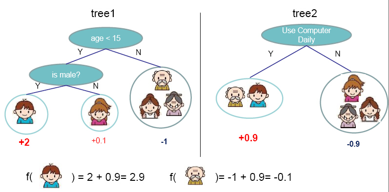
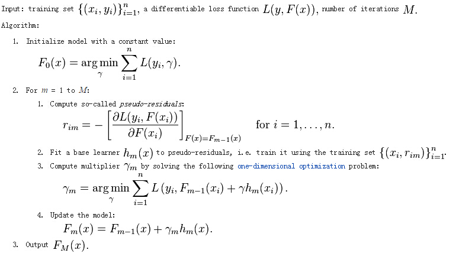
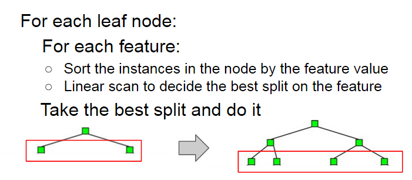
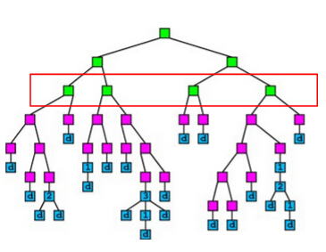
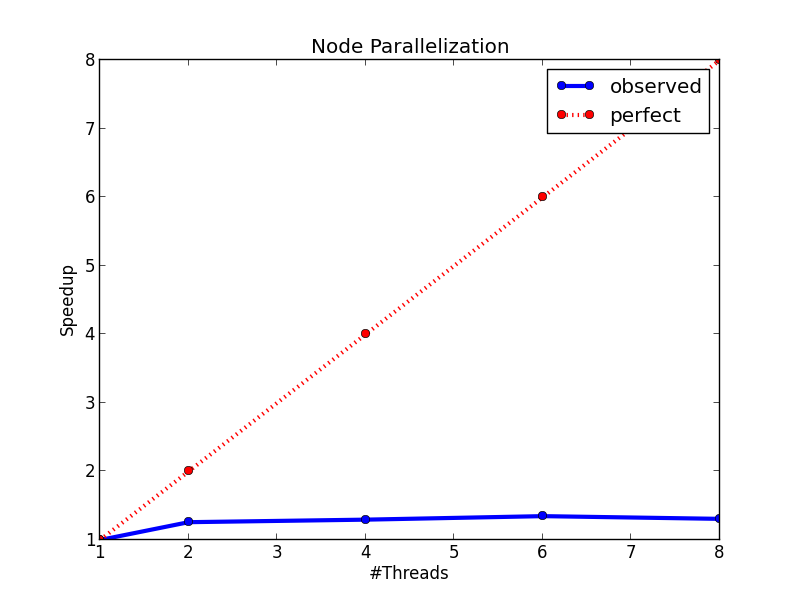
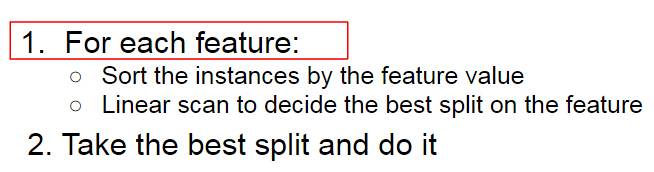
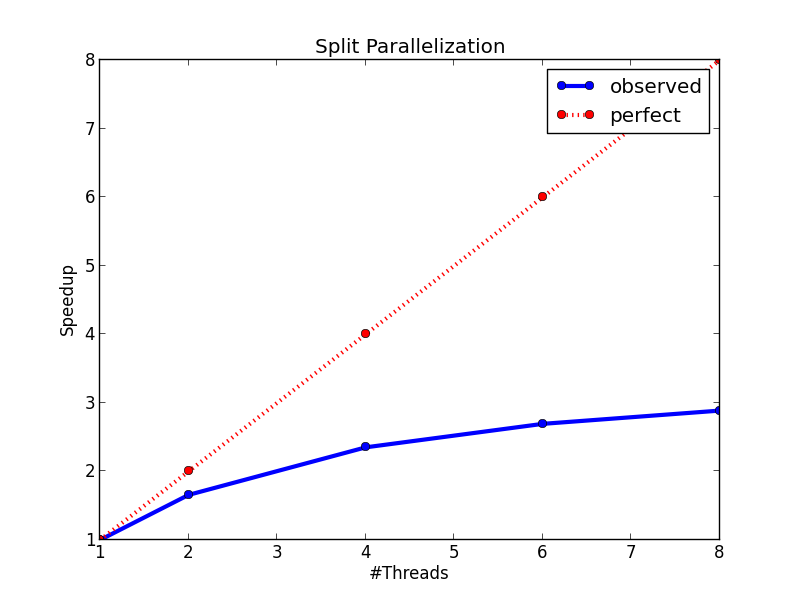
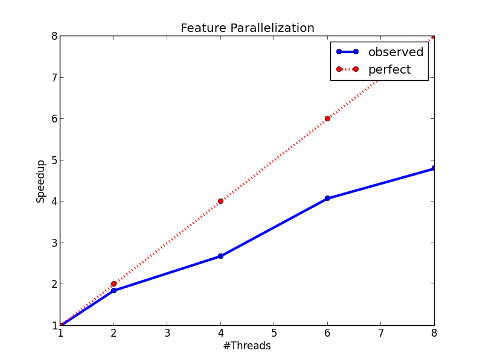
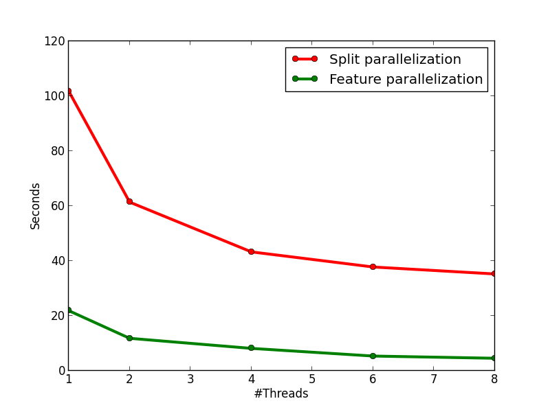

Gradient boosting is a machine learning technique for regression problems, which produces a prediction model in the form of an ensemble of weak prediction models. Gradient Boosting Decision Trees use decision tree as the weak prediction model in gradient boosting, and it is one of the most widely used learning algorithms in machine learning today. Its high accuracy makes that almost half of the machine learning contests are won by GBDT models. Below shows an example of the model.
Figure from http://homes.cs.washington.edu/~tqchen/pdf/BoostedTree.pdf
The general idea of the method is additive training. At each iteration, a new tree learns the gradients of the residuals between the target values and the current predicted values, and then the algorithm conducts gradient descent based on the learned gradients. The algorithm description from Wikipedia is showed as followed:
We can see that this is a sequential algorithm. Therefore, we can't parallelize the algorithm like Random Forest. We can only parallelize the algorithm in the tree building step. Therefore, the problem reduces to parallel decision tree building.
Since some experimental results will be showed when introducing the algorithm, we first introduce the dataset and the setting of the experiments. The data we use is from a competition of IJCAI'15. We extracted one small dataset and one large datset from the data. The statistics of the small dataset and the large dataset are showed as follows:
Without specification, the experimental results below are obtained from the small dataset. All the running time below are measured by growing 100 trees with maximum depth of a tree as 8 and minimum weight per node as 10. All the experiments are performed on a Debian machine with eight Intel E5-2650 2.0GHz cores and 64GB memory.
We first define the input and output of the decision tree building problem:
We also recap the algorithm for sequential decision tree building below. The building process grows a decision tree by levels. At each level, the algorithm first enumerates each leaf node at the level, and then conducts a split finding process on the node. During the split finding process for a node, the algorithm enumerates each features, then sorts the instances in the node by the feature values, and finds the best split of that feature in the node by linear scan. Finally the algorithm chooses the best split among those of all the features to split the node.
A simple idea of parallel decision tree bulding is to parallelize node building at each level. However, this method has a serious workload imbalanced problem. The reason is that a decsion tree tends to purify its nodes to obtain high prediction accuracy, and therefore many of the nodes will only contain a small group of training instances that have purified results, while some other nodes contain large group of trianing instances. The figure below shows an example of the imbalanced workload problem. Suppose we are going to build the nodes in the red box in parallel. We can see that the first and the third nodes contain much less training instances than the second and the fourth node, which causes the workload imbalanced.
The figure below shows the speedup of the node parallelization method. We can see that we only gain a very small speedup from node parallelization due to the workload imbalanced problem.
Recall that in the split finding process on a node (the process is showed below), we need to enumerate each feature to find the split. The idea of this method is to parallelize the split finding process, so that in each node, the algorithm find split for different features in parallel.
The speedup figure below shows that this method performs better than node parallelization. However, it still fails to achieve half of the peek speedup. The main problem of this method is that it will has too much overhead for small nodes. When a decision tree grows deeper, most of the nodes will only contain a small number of training instances. In this case, the computation cost for each node is very small, and the benefit brought by parallel computing can not cover the overhead brought by context switching, thread joining, and etc., which makes the method fails to achieve a good speedup. However, this method indeed points us to a correct direction, and our final method is based on parallel split finding by features.
It is showed above that at each level, the sequential building process of decision tree has two loops, the first one is an outer loop for enumerating the leaf nodes, and the second one is an inner loop that enumerates the features. The idea of this method is to swap the order of these two loops, so that we can parallelize the split finding for different features at the same level. A pseudocode of the algorithm is showed below. We can see that by changing the order of the loop, we also avoid sorting the instances in each node. We can sort the instances at the start of the whole building process, and then use the same sorting result at each level. On the other hand, note that to keep the correctness of the algorithm, each thread needs to carefully maintain their scaning status of each leaf node during the linear scan process, which significantly increases the coding complexity of the algorithm.
The advantages of the method are:
The figures below show the speedup of the method and the running time comparison between this method and method 2. On the left figure, we can see that the method has an almost perfect speedup with two threads, and a 4.8x speedup with eight threads. On the right figure, we can see that the method is much faster than method 2, and it is because of the lower time complexity of the algorithm and the smaller overhead from multi-threading.
 In this section, I show the effectiveness of my method and implementation by comparing with two strong baselines: OpenCV and XGBoost. The introduction of the two baselines are showed as follows:
My algorithm and implementation is competitve with (and in many cases better than) the implementation in OpenCV and XGBoost. The figures below show the running time of the three implementations on the two datasets. We can see that on the small dataset, my implementation is slightly slower than the OpenCV implementation on the single-thread case, but becomes faster than OpenCV when the number of threads is more than one since OpenCV does not have multi-thread implementation. When comparing with XGBoost on the small dataset, my implementation is faster than XGBoost on each tested thread configuration. On the large dataset, we can see that OpenCV performs significatly better in the single-thread case due to the early pruning technique, but worse than my method in the multi-thread cases. When comparing with XGBoost, in general, my implementation performs slightly better than XGBoost, but the performance difference between the two methods are not obvious.
Last updated by Zhanpeng Fang, May. 11th 2015.